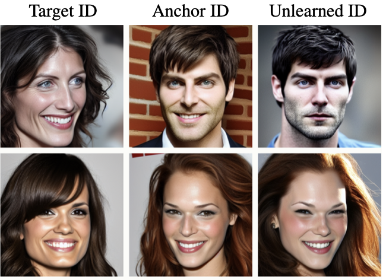

First author · IJCB 2026
PIU: Proximity-guided Identity Unlearning
PIU protects a chosen identity in ID-conditioned diffusion models by re-teaching what its identity conditioning means, so the model stops generating that person while image quality stays intact.
Computer Vision Laboratory, University of Ljubljana